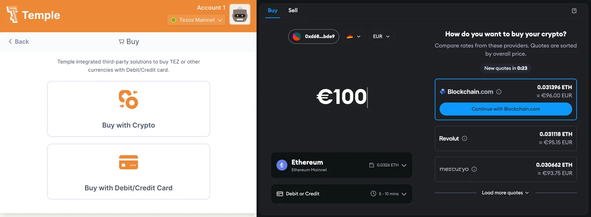
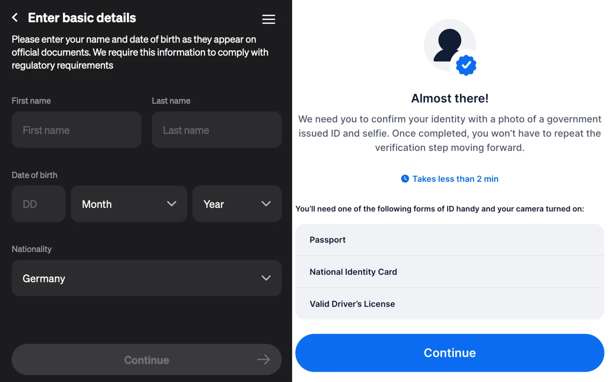
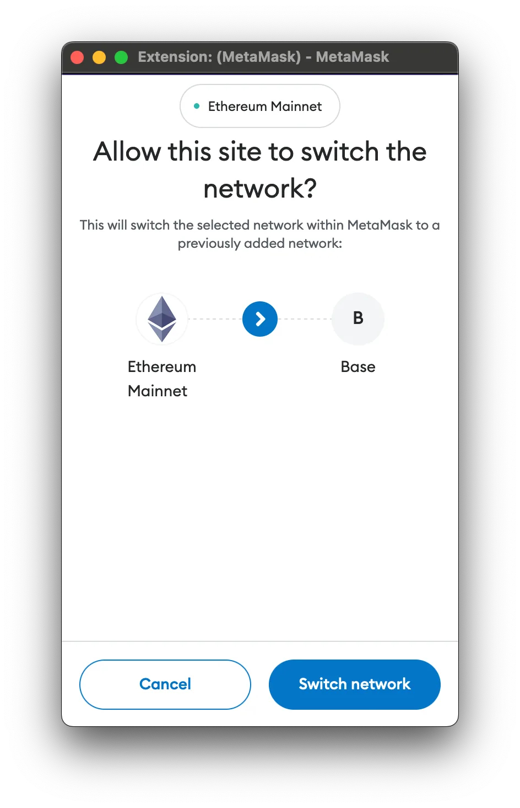
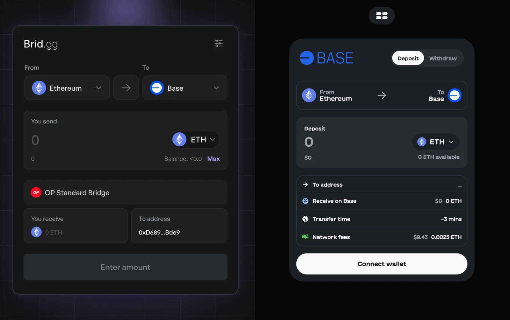
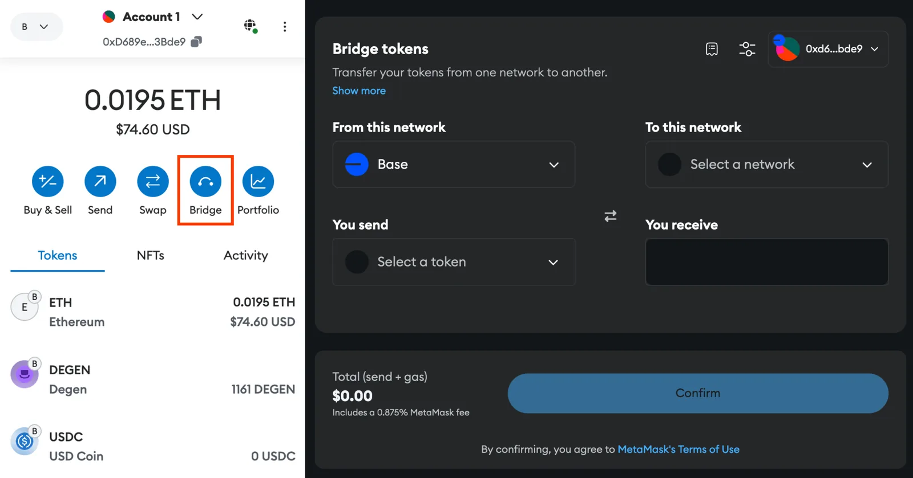

Adding Funds to Your Wallet
fxhash currently supports three different blockchains for artists to publish their generative projects on: Tezos (XTZ), Mainnet Ethereum (ETH), and Base (an Ethereum L2). To collect editions from a particular project, your wallet must be compatible with the blockchain the project is minted on. For example, if you want to collect a project that is minted on Tezos, this would require you to have a Tezos compatible wallet (ex. the Temple wallet).
If you’ve already installed a wallet for the chain of your choice, and have connected it to fxhash -then you're all set!
Furthermore, collecting a piece of fxhash also require your wallet to contain sufficient funds to cover the purchase cost, and also cover the gas fees associated with effectuating the necessary transactions to acquire the token. Obtaining these initial starting funds can be a little challenging if it’s the first time that you attempt to do so - in what follows we outline some of the different methods for obtaining different cryptocurrencies and funding your wallets with them. We also cover some tools that let you manage your funds later on.
Managing funds via a Centralized Crypto Exchange (CEX)#
Centralized Exchanges (CEXs) are the most common method for funding your crypto wallets, as they facilitate the purchase of cryptocurrencies via various payment methods:
Centralized Crypto Exchange (CEX)
A centralized crypto exchange (CEX) is an online platform managed by a central company that facilitates the buying, selling, and trading of cryptocurrencies. They act very similarly to traditional stock exchanges, essentially as intermediaries that hold your crypto funds on their platform and provide you with useful functionalities to manage these funds.
In that sense, CEXs are online platforms, that provide modern and convenient interfaces for the trade and exchange of different crypto currency pairs, as well as the conversion to and from fiat currency. These platforms generally require you to register by creating an account and verify your identity to check your eligibility for using their services.
Before you make an account on a given CEX however, it's important to spend some time and research which one of them is the most convenient one for you:
- Cross-chain Support: Not all centralised exchanges support all cryptocurrencies, nor do they support trades between arbitrary currency pairs - depending on which chains you intend to be active on this might play a factor.
- User Verification (KYC): As mentioned, centralized exchanges are subject to regulations require customer verification (KYC - Know Your Customer), meaning that you'll need to provide identification before using their services. Depending on your country of residence these regulations might be varyingly strict, and some exchanges might not even be available in your geographical location.
- Security: It’s important to keep in mind that centralized exchanges are under the control of a central authority, if the platform ever gets hacked or for some reason shuts down, your funds stored on this exchange may be in danger. It is recommended to use a reputable and well-established exchange with robust security measures in place.
Another thing to consider is that different exchanges might have different fee structures - depending on which kinds of transactions you’re planning on doing most this might also play a factor. The following fees are commonly imposed:
- Trading Fees: Charged whenever a trade is executed. This fee is either a percentage of the trade amount or a fixed fee per trade.
- Withdrawal Fees (Cashing Out): Some exchanges charge fees for withdrawing funds from the platform. These fees are either a percentage of the withdrawn amount or a fixed amount.
Once you've settled on an exchange and purchased the currency that you intend to collect with, you can then transfer these funds to your own browser wallet(s) - essentially the wallet(s) that you intend to use with fxhash. It is generally not possible to purchase NFTs with the wallet addresses on a CEX since they're primarily deposit addresses.
Withdrawing Funds as an Artist
If you're an artist, it is a good idea to set up an account on a CEX, to be able to withdraw the earnings you make from selling your generative art on fxhash directly to your bank account.
Naturally, different exchanges have different interfaces and vary in their functionality - it would be beyond the scope of this documentation to provide explanations for this purpose. It can sometimes even be beneficial to have an account on several exchanges at the same time, depending on the convenience of the different features they provide.
Purchasing Funds via Credit Card through your Wallet#
Most wallets provide an option for directly purchasing cryptocurrency via a credit card. Both Temple and Metamask currently support this feature:

This generally provides a streamlined method for funding wallets without the need to register on a separate cryptocurrency exchange. Note that these purchases require identity verification (KYC) for compliance purposes:

It is also possible to purchase Layer 2 Ethereum in this manner.
Receiving Funds from Others#
If both of the above methods are not viable for you, it is always also an option to receive funds from someone else - if you're an artist, it might be possible to receive some starting funds from one of your artist friends as a way to cover the initial transaction costs for minting your first project on the blockchain.
This is especially useful if you intend to mint your project on Tezos or Base, both chains have minimal transaction fees, hence you would only require little starting funds. You can then always repay the favor later, either by returning the funds, or by supporting your artist friends
Purchasing L2 ETH#
Base is an Ethereum L2, a secondary layer built on top of Ethereum’s mainnet that makes transactions speedier and more affordable.

Although it also uses ETH as a fungible currency, it operates on a separate network, meaning that it is essentially a different currency even though it has the same identifier. ETH needs to be sent over to that network first before it can be used for transactions on the L2:
Switching Networks
When effectuating a transaction on a different network, your wallet will usually ask you to confirm switching to the network first before executing the transaction.
Coinbase is currently developing the Base L2 chain. Their crypto exchange and software wallet currently streamline most operations on the network - although other platforms/wallets that support Ethereum are quickly catching up.
Currently there’s three methods for obtaining Base ETH:
- Directly purchasing Base ETH on a CEX: Some exchanges allow you to directly purchase Base Ethereum which can then be sent to your browser wallet. Coinbase is one of them. Some other CEXs also support this functionality, but not all platforms support all L2s it is important to verify beforehand, L2s are still relatively new and not supported by all exchanges and/or might only be supported to a limited extent.
When sending ETH funds from and to your wallets, make sure that your are doing so on the correct networks - sending funds from an address on a different network can cause these funds to be lost.
-
Purchasing Base ETH via credit card directly in wallet: while previously it wasn’t possible to purchase L2 currencies via wallet credit card transactions - Metamask does support this feature now via a number of different providers.
-
Transferring mainnet ETH to the Base Network via a bridge: Network bridges are methods for sending assets from one network onto the other - for instance from ETH mainnet to one of its L2s. Bridges are smart contract based dApps that operate in a decentralized manner - there’s a couple of different ones right now, that function in a relatively similar manner where you select the two networks that you want to send funds between as well as the currency that you’d like to transfer:

Metamask now also provides a bridge functionality:

Bridge Transaction Times
While depositing ETH and other assets from mainnet onto the Base network via a Bridge takes a few minutes, withdrawing funds in the opposite direction can take up to 7 days.
This is due to how L2s are built on top of Ethereums mainnet. Transactions on the L2 network need to be bundled up before they can be sent back and written to a chain’s mainnet. There might be alternatives than can process withdrawals faster, but please make sure to verify their legitimacy.
Decentralized Exchanges DEXs#
DEXs don't hold your funds like centralized exchanges, but instead make use of smart contracts to facilitate peer-to-peer trading directly between users. The decentralised nature of DEXs generally makes them operate with less regulation, allowing for more anonymity and users to retain control over their funds throughout the process just like with other dApps:
Decentralized Crypto Exchange (DEX)
Decentralized crypto exchanges (DEXs) are essentially trading stations for crypto assets that cut out the middleman. Unlike regular exchanges where trades are effectuated with the exchange itself, DEXs connect you directly with other traders. Transactions happen directly between user wallets, with smart contracts handling the exchange securely.
DEXs are generally intended for the purpose of exchanging different crypto assets on the same chain or network - for example, this is useful when you want to convert and store your funds in form of a stable coin that is resistant to the value fluctuations that can often occur in crypto markets.
For Tezos a popular DEX is Quipuswap, whereas for Ethereum and its L2s a common DEX is Uniswap. DEXs can sometimes be slightly slower when compared to CEXs due to the reliance on blockchain confirmations - gas fees can also vary depending on the specific DEX and the complexity of the trade, but there’s generally no other platform fees associated as compared to CEXs.
Other Methods for converting ETH into TEZ#
There are also a couple of ways to convert/bridge ETH into XTZ that provide an alternative fund conversion method to be aware of:
- Via the Temple Wallet: the Temple wallet offers an option for purchasing Tezos with Ethereum instead of a Credit Card, via an ETH wallet of yours - when buying XTZ through the wallet simply select the “crypto” option instead of credit card.
- Plenty Bridge: A decentralized bridge that lets you bridge ETH and Polygon funds over to Tezos.
Both of the above methods are explained in more detail in this article:
Embedded content: <https://news.tezoscommons.org/how-to-swap-eth-for-xtz-without-a-centralized-exchange-13d323ae2d04>
Safety Notes when Operating CEXs/DEXs#
To conclude, here is a number of things to always keep in mind when managing crypto funds and assets:
- Put security first. Audit platforms before connecting to them: Always be careful about the platforms that you choose to manage your assets with. Never blindly connect you wallet to a random dApp, make sure that it is a trustworthy platform beforehand.
- Verify transactions before confirming them: Never blindly trust when a platform or dapp asks you to confirm a wallet transaction - double check the subject is that you’re confirming
- Address Verification: Always double check and make sure that you are sending assets to the correct address on the correct network. Lost assets/funds can generally not be recovered, or only be retrieved with great difficulty.
- Beware of Phishing and Scams: Double-check URLs, never click suspicious links, and be wary of unsolicited emails or messages requesting sensitive info. The crypto space is filled with rug pulls and fraudulent schemes - learn to identify red flags of potential scams.
- Seed Phrase is Sacred: It goes without saying, but your seed phrase is the master key to your non-custodial wallet. NEVER share it, store it offline in multiple secure locations. Never reveal it to anyone. The same is true for other sensitive information.
Make sure to also read our resource on Staying Safe in the Web3 setting.
A Note on Gas Fees#
Gas fees are comparable to a network's "fuel" that allows it to process transactions. Gas fees are usually highest when the network is busy, like rush hour traffic. Expect them to be lower at night or on weekdays when fewer people are using the network. You can check online trackers to see current state of gas prices and estimates on transaction costs. It’s important to take these fees into consideration when performing transactions on fxhash.
Tezos only requires minimal gas per transaction since it is designed for efficiency. Overall it also has a much smaller user base compared to Ethereum, meaning that there's less competition for space on the network, in turn keeping gas fees much lower overall. Tezos fees aren't however zero and can still change based on network activity.Ethereum on the other hand is frequently very congested and gas prices are extremely high, hence the importance of waiting for times when gas fees become relatively afforadable.
Ethereum Layer 2 (L2) networks like Base achieve significantly lower gas fees compared to the main Ethereum network (L1). This is due to a key difference in how they process transactions. These networks bundle multiple transactions off-chain (outside the main Ethereum blockchain) before periodically submitting them as a single transaction to L1. This "batching" process allows L2s to handle a much higher volume of transactions, reducing congestion and significantly lowering gas fees for individual users.
It’s important to keep this in mind when collecting on fxhash, and pick strategic moments when gas fees are low.